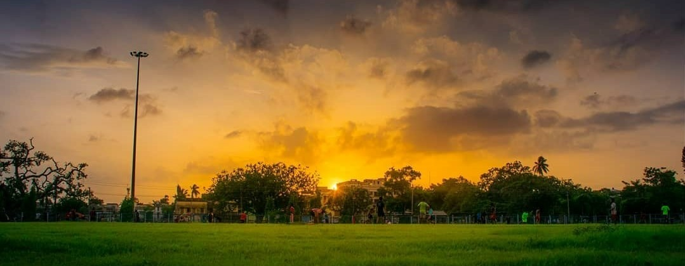

About
Chinsurah is a very beautiful city. The city has a historical value as it is a old city. Apart from this, it is located on the bank of hooghly river so the natural beauty of the city is realy enjoyable. There is a excelent food culture in this city that you should experience.
There are so many more beautiful and interesting facts about Chinsurah that all of those can not be mentioned in the website. So, please come, visit and experience this city atleast once.
There are so many more beautiful and interesting facts about Chinsurah that all of those can not be mentioned in the website. So, please come, visit and experience this city atleast once.